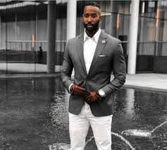

The Differences of Fashion:

Streetwear fashion, this style has started to become very prominent in recent years
it is a new look that mixes many colorful clothes to make a styleish and different look.

Classical fashin, a fashion style that sends you back but looks nice, classical fashion is usally mixed with
modern and older styles to make a clean and relatively styelish outfit.

Grunge fashion, this shows the uniqueness of street fashion and how different it is
you usally wouldn't see this often walking around, but when you do their making a statement.

Formal fashion, this is more buisness and professional oriented, and gives a clean look. This is one of
the best looking styles because of how much your demeanor changes when you wear formal fashion.